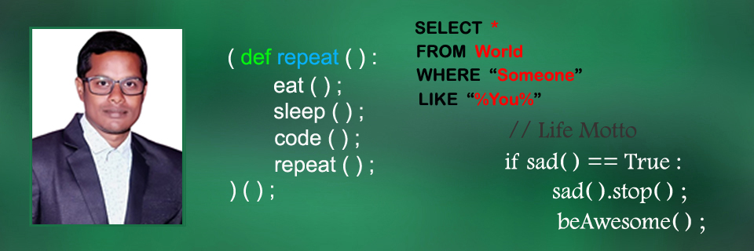

Intro

I love Data Science and every day I am applying/learning to apply the principles of Data
Science, Analytics & Business Intelligence in solving problems for Marketing, Health Care, Education etc. I love to read the latest trends in the fields of Data Science, Analytics and how businesses are
using the same to become better and more efficient. When I am not reading and researching
about Data Science I like to travel new places nearby me, spend time with my friends, browse new technologies over the internet. I have the ability to work hard, work under pressure and I am a quick learner, always ready to learn new things.
I have completed Data Science course i.e Classical Machine Learning from DecodR Institue where I learned about Data Preparation, Data Cleaning, Data Analysis, Machine Learning and different Algorithms associated with it.
Master of Computer Application (MCA) in Silicon Institute of Technology, Bhubaneswar under BPUT.
You can find my Resume here.
Projects

COVID Help
Built WebApp using Flask web framework for helping the Covid Patients with Blood and Oxygen. Here both the Blood Donors and Oxygen Provider Organisations / Groups can register themselves and with Admin Approval, their data will be appeared on the Donor Search List where the users or we people can search by location / area / state / district /blood group and contact them. This will help almost all the people who need Blood and Oxygen in this pandemic situation.
Deployed Link on Heroku...

COVID-19 Probability Detector
Performed feature extraction and supervised learning on a Dummy Data and deployed it using Flask web framework. My objective is this can be a solution (Technical) to detect the Probability of being COVID affected. It will work better on real data.
Code

E-Commerce Website with Blog
Built e-commerce website using both the web frameworks Django and Flask.
Code for Django Project
Code for Flask Project
Skills
- Data Visualisation and Communication ( Matplotlib, Seaborn )
- Programming, Debugging and Modelling
- Machine Learning
- Python, C, Django, Flask and MySQL
Contact
email
patraashish28@gmail.com
Phone
+91 9776634989
Links